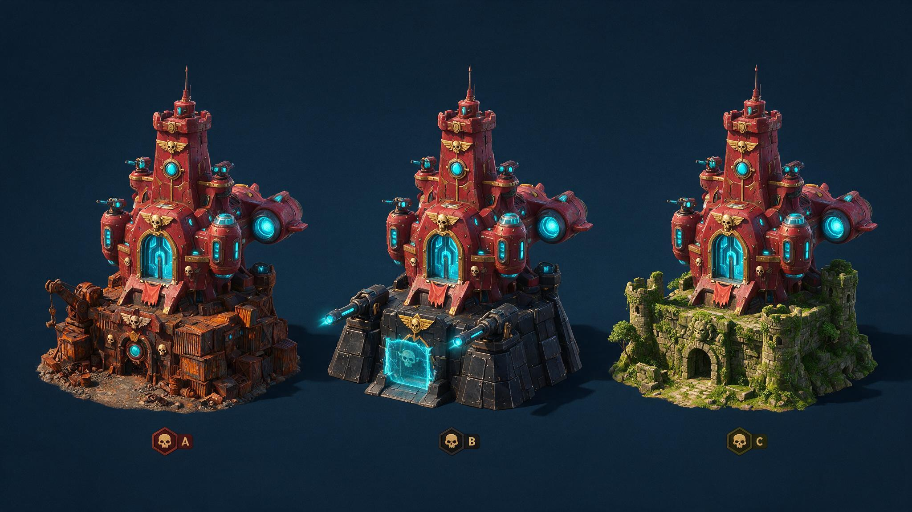

AGE OF APES · 万象主城
主城从「一整座卖」改成「拆两段卖」
主城拆成 底座（城基） + 城市本体 两段，各出好几款，玩家随便配、还能各自换色。
本体是付费大头，底座、光效、配色是辅助。
为什么值得做
现在一套主城套装 5 件，集齐就到顶，下一期新套装一上、上一期直接归零 —— 玩家也知道这事，反过来压当期购买。
拆成两段之后：这期出的新本体，能装在往期所有底座上；这期出的新配色，能刷往期所有部件。
新内容给旧内容增值，旧的不作废。

同一款城市本体，装在三款不同底座上 —— 上半段完全一样，只换下半段。这就是全部机制。
一期能卖多少
现在（一套节日主城套装）
5
个可售单位
- 2 张皮肤 + 3 个挂件
- 集齐送最终形态 = 消费终点
- 下期归零
本案（首期）
18
个可售单位
- 3 底座 + 4 本体 + 1 光效
- 9 个配色 + 1 个搭配存档位
- 全部永久保留，往期不下架
跑满一年 6 期：现在模式 30 个，本案约 86 个。真正的差别不在这个倍数，
在于第 6 期的新配色是卖给前 5 期所有买过底座的人。
首期给什么
底座 3 款
锈铁台 · 磐甲基 · 苔垣遗基
废土工业 / 装甲军事 / 丛林遗迹。锈铁台走免费
城市本体 4 款 ★
铁工巨械 · 赤翼星舰 · 猿王座 · 熔心方尖
4 款抢 1 个位置 —— 想换就得多买
另有城辉（环星光带）1 款 + 9 个可购配色。
三样都凑到当期最高稀有度 → 主城进「璀璨态」，门槛每期重定，所以永远有得追。
美需已出 —— 8 款部件 + 9 个色板的可执行 brief（造型 / 底座顶面净空 /
动态 / 配色 / 避坑 / 每款 2-5 条参考图链接）在节日文案主表新 tab
新系统-万象主城（首期）。
第一行是四条通用硬约束（挂载点 / 底面平切 / 材质槽命名 / 城辉不遮挡），
美术开工前要先定这四条。
要你拍三件事
- 属性 buff 怎么算。现在每个挂件都带 buff，件数从 8 涨到 20+ 会打崩数值。
建议单件不带 buff、全收到「收藏度」上做递减封顶。首期配表前必须定。
- 挂载点规范什么时候定。底座顶面的接口尺寸要全项目一套值，
美术开工前定死 —— 事后改等于已产的全部部件重做。
- 老玩家那 7 套旧套装怎么接。旧模型拆不出两段，只能整套接进来、计收藏度，
不能拆件混搭。不接的话老付费玩家会觉得被背刺。